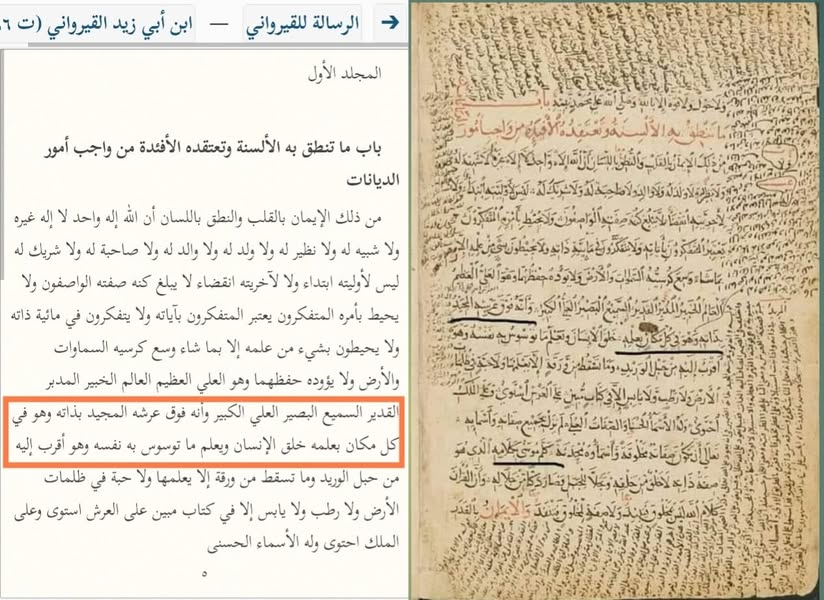

ইবনু আবি যায়েদ আল-কায়রাওয়ানি রাহ. (৩১০-৩৮৬ হি.)
১১ জুলাই, ২০২৩
ইবনু আবি যায়েদ আল-কায়রাওয়ানি রাহ. (৩১০-৩৮৬ হি.)
মালিকি মাজহাবের বিখ্যাত ইমাম। আশআরি আকিদাহর মুতাকাদ্দিমুনের অন্তর্ভুক্ত ইমাম যিনি। তিনি বলেন—
“তিনি (আল্লাহ) সত্তাগতভাবে তাঁর আরশে মাজিদের ওপরে রয়েছেন। আর তিনি সর্বত্র রয়েছেন তাঁর জ্ঞানের মাধ্যমে।”
وأنه فوق عرشه المجيد بذاته وهو في كل مكان بعلمه.
[রিসালাতু ইবনু আবি যায়েদ কায়রাওয়ানি-০৫ নং পেইজ]
এখন প্রশ্ন হল, যারা আমাদের দেহবাদি ট্যাগ দেন, তারা কি ইমাম কায়রাওয়ানিকেও দেহবাদি ট্যাগ দেবেন?
একই বিশ্বাস তো আমাদেরও যে, “মহান আল্লাহ সত্তাগতভাবে আরশের ঊর্ধ্বে বিদ্যমান। আর তাঁর জ্ঞান সর্বত্র বিরাজমান।” যেই আকিদাহ ইবনু তাইমিয়্যা রাহ-সহ তাঁর সব অনুসারীদের দেহবাদি বানিয়ে দিল, সেই আকিদায় কায়রাওয়ানি কেন দেহবাদি হল না? উত্তর জানার আগ্রহ রইল।
#আল_উলু
